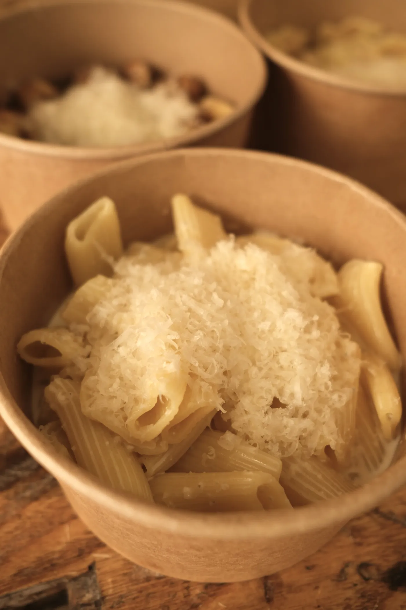
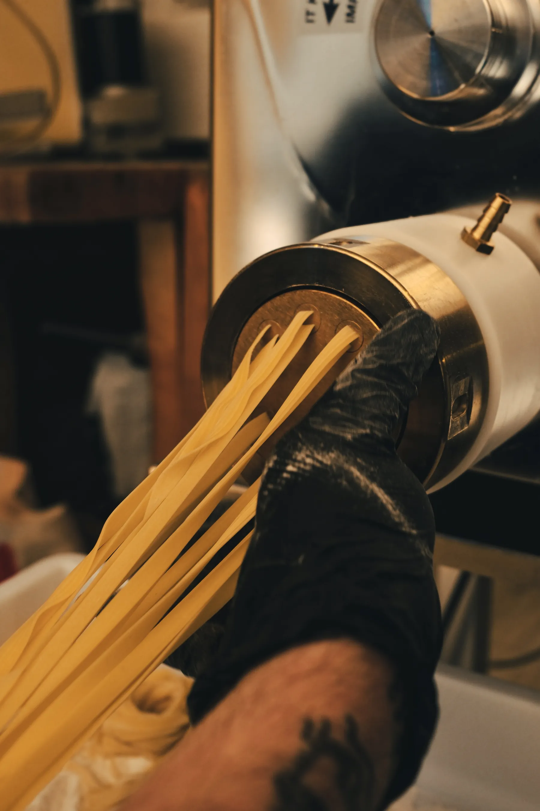
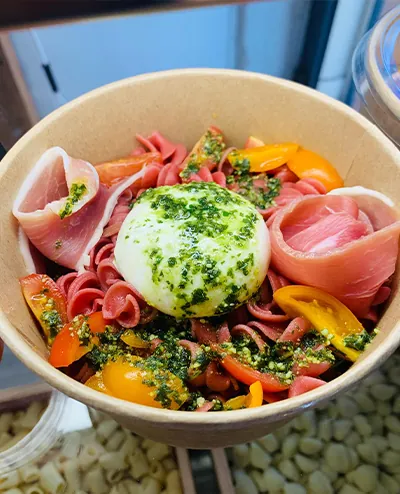
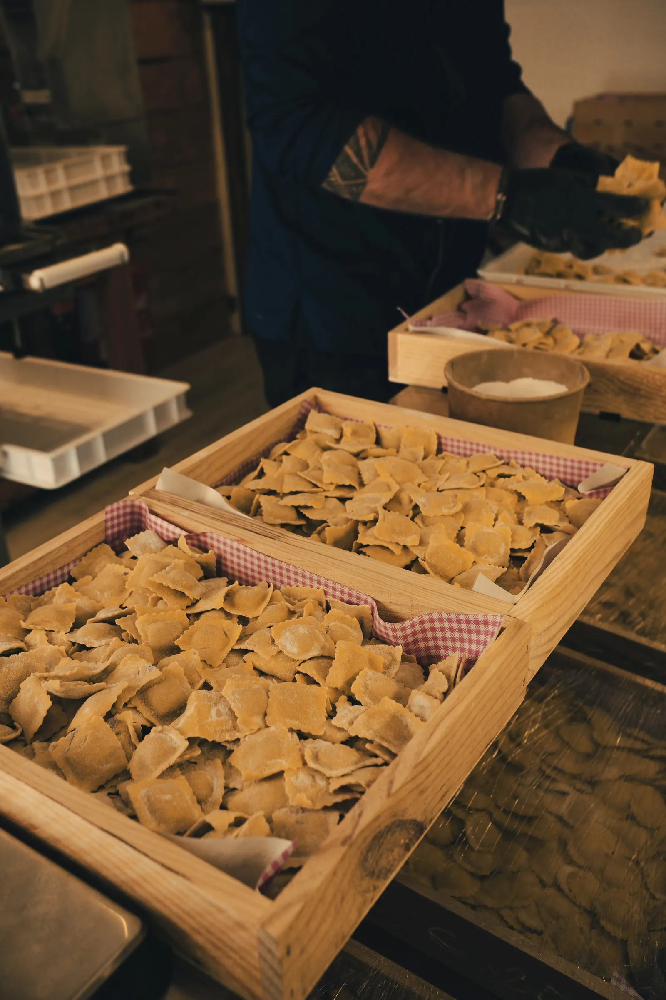
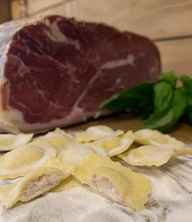
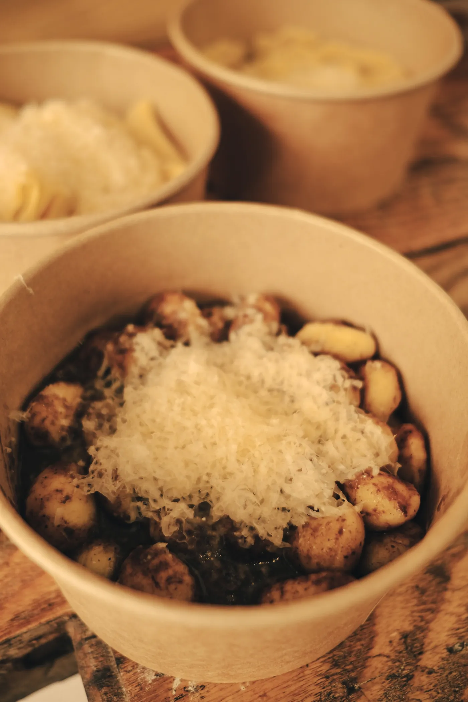
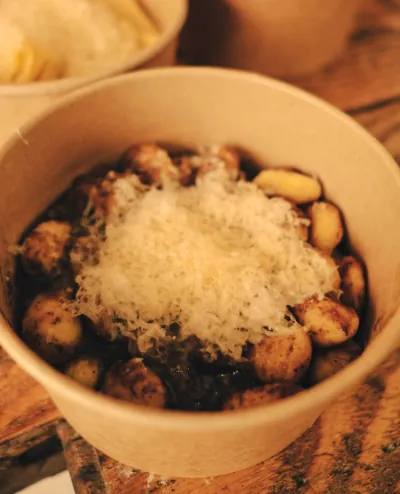
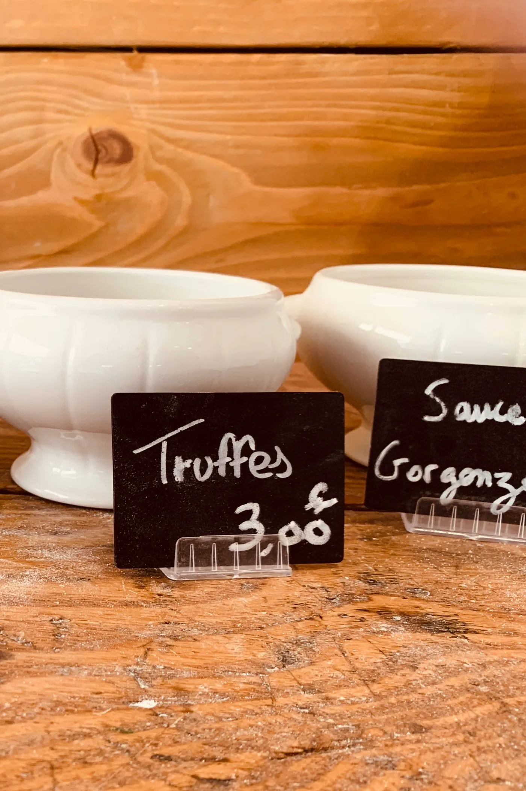
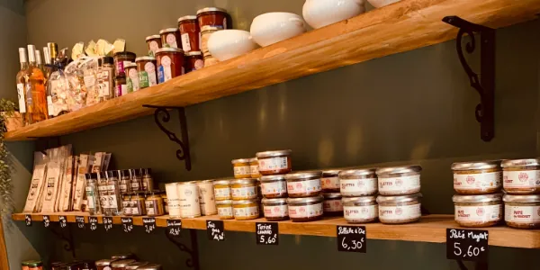

Raviolis à la daube
Un rouge structuré répond à la richesse de la daube et du jus de cuisson.
Pâtes artisanales, sauces maison et cave à vins : chaque produit est sélectionné ou préparé avec passion. Savourez des recettes inspirées de la tradition !



Nos pâtes fraîches sont façonnées chaque jour sur place. Nos tagliatelles, rigatoni et fusilli accompagnent parfaitement nos sauces maison ou vos créations culinaires.


Notre gamme de raviolis artisanaux propose une base incontournable, toujours disponible, à laquelle s’ajoutent des raviolis du terroir, inspirés d’un plat français et renouvelés toutes les deux semaines pour varier les saveurs.


Nos gnocchis, légers et savoureux, sont réalisés à partir de recettes traditionnelles. Leur texture moelleuse et leur goût délicat en font l’allié idéal d’un repas convivial et réconfortant.

Découvrez nos sauces maison en pot, prévues pour deux portions de pâtes. Des recettes gourmandes et raffinées, prêtes à sublimer vos plats.

Nous sélectionnons des produits d’exception issus de producteurs français. Une gamme authentique qui reflète le meilleur du savoir-faire artisanal français.

Notre cave à vins met en avant des vignobles français soigneusement choisis, de domaines reconnus et familiaux. Blancs fruités, rouges puissants ou rosés délicats : chaque bouteille s’accorde avec nos pâtes, nos raviolis ou nos spécialités.
Un rouge structuré répond à la richesse de la daube et du jus de cuisson.
Gorgonzola, cèpe ou truffe : un blanc fruité apporte fraîcheur et rondeur.
Poivronnade à l’ail confit, salades de pâtes : le rosé, évidemment.
Les prix de nos produits sont affichés en boutique. Pour connaître le ravioli du terroir du moment ou les disponibilités du jour, appelez-nous au 06 64 97 42 82.
Maison Pastier vous accueille avec authenticité et gourmandise. Entre pâtes fraîches et box repas, nous réunissons tradition et saveurs modernes, pour vos courses, vos repas rapides ou vos envies gourmandes.
| Mardi | 8h30 – 13h00 · 16h30 – 19h00 |
|---|---|
| Mercredi | 8h30 – 13h00 · 16h30 – 19h00 |
| Jeudi | 8h30 – 13h00 · 16h30 – 19h00 |
| Vendredi | 8h30 – 13h00 · 16h30 – 19h00 |
| Samedi | 8h30 – 13h00 · 16h30 – 19h00 |
| Dimanche | 8h30 – 13h00 |
| Lundi | Fermé |